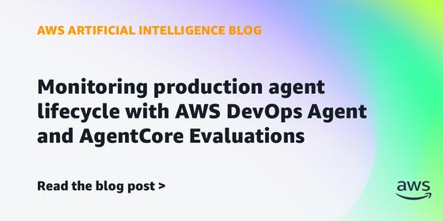
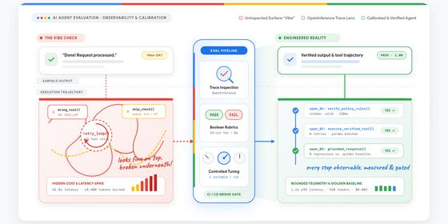
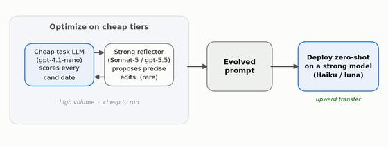

Executive Synthesis: New agent identity guidance and evaluation papers lead this Sunday issue, alongside weekend badminton titles, a Cambrian-evolution deep dive, and the week’s Telugu releases.
Agent Papers Radar
Across trending, systems, and evaluation work, the papers test judge reliability, long-horizon tasks, prompt optimization, and the scaffolding around coding agents. Popularity counts and reported results are tied to what the pages show.
Trending agent papers
| arXiv: | Oct 23 · 7m |
Takeaway: For your agent-evaluation and prompt-optimization interests, watch how the framework isolates evaluation from the part being optimized.
| arXiv: | Oct 22 · 6m |
Takeaway: It offers a concrete trajectory-level evaluation pattern for your work on testing multi-step agents against realistic user behavior.
| arXiv: | Oct 22 · 6m |
Takeaway: The review loops and structured runtime make this a useful harness design to compare with your production-agent tooling interests.
| arXiv: | 4 days ago · 6m |
Takeaway: Its stateful tool harness and cost-per-output measure connect directly to your interest in long-form narration and production agent runtimes.
| arXiv: | Oct 24 · 7m |
Takeaway: This is a concrete self-improving research-agent loop to watch for its memory, verification and live-feedback design.
| arXiv: | 3 days ago · 6m |
Takeaway: The combination of step-level evaluation and concurrent device infrastructure is relevant to your agent-evaluation and runtime interests.
Runtime, harness and production engineering
| arXiv: | Sep 30 · 10m |
Takeaway: For your harness and evaluation interests, it is a reason to isolate model, tool-access, and orchestration effects under matched budgets.
| arXiv: | Oct 15 · 7m |
Takeaway: For your voice-agent interests, compare turn-detection errors by language and framework instead of relying on English latency alone.
| Datadog: | 3 days ago · 12m |
Datadog recommends measuring idle time before choosing agent compute
—
Datadog argues teams should measure agent compute before placing all tasks on long-lived workers. It cites a study of more than 35,000 production coding-agent sessions in which the median session used LLM or tool calls for only 20% of its lifetime, with the rest idle while sandbox resources remained allocated. The post recommends testing a serverless default and moving only latency- or runtime-sensitive steps to warm or dedicated capacity. Because this is vendor-authored guidance referencing an external production-session study, it is not a neutral head-to-head infrastructure benchmark.
Takeaway: The active-time measure gives your agent-runtime interest a useful input for deciding what state needs to persist between steps.
| AWS Machine Learning Blog: | Sep 11 · 8m |

AWS pairs agent-quality scoring with infrastructure investigations — AWS illustrates two monitoring layers in an airline-reservation example: AgentCore Evaluations scores live interactions for task quality, while DevOps Agent investigates infrastructure failures across logs, traces, IAM, and service boundaries. The implementation uses four specialized agents and OpenTelemetry instrumentation, addressing cases where healthy infrastructure metrics conceal wrong tool choices or failed goals. The article offers an AWS-specific reference design and examples, but reports no controlled comparison or measured production cohort, so it is implementation guidance rather than evidence of general effectiveness.
Takeaway: It connects your agent-observability interest to the distinction between behavioral quality signals and infrastructure traces across handoffs.
| MongoDB Builder Blog: | Aug 11 · 8m |
MongoDB separates tool connectivity from orchestration responsibilities
—
MongoDB's engineering article treats orchestration as the runtime loop around tool dispatch, with retries, timeouts, permission checks, and recovery kept distinct from reasoning patterns and tool routing. It notes that definitions for roughly 90 tools on GitHub's official MCP server range from about 17,600 tokens to over 40,000 depending on version and counting method, illustrating how interface size can consume context before a run starts. The piece is design guidance, not a controlled evaluation, and its token range is method-sensitive.
Takeaway: For your runtime and tool-interface interests, its retry, timeout, permission, and recovery boundaries offer a practical lens for reviewing MCP integrations.
Evaluation, observability and safety
| Google Developers Blog: | Oct 15 · 8m |

Evaluating AI agents: moving past the vibe check — Google outlines an agent-evaluation pipeline that starts from critical user journeys, manually reviews 5–20 traces, converts failures into deterministic assertions and boolean judge checks, and reruns the same frozen suite after prompt, model, or tool changes. Its agent-eval example ingests OpenTelemetry/OpenInference traces, reports quality alongside latency, tokens, API spend, and tool calls, and gates pull requests on an example 95% pass bar with zero regressions. The authors warn that 1–5 judge scales drift and recommend checking automated verdicts against human-reviewed traces. This is implementation guidance, not an independent comparison.
Takeaway: Your trajectory-testing work can use this staged pattern to validate judge rubrics against reviewed runs before letting them gate releases.
| GEPA Community Blog: | Sep 29 · 7m |

Optimize Cheap, Deploy Strong: A Recipe for Cost-Efficient GEPA — GEPA's candidate-scoring runs dominate optimization cost, so this recipe uses a cheap task model for repeated rollouts, a stronger reflector for edits, then deploys the unchanged prompt on a stronger model. On HotpotQA, the authors report 59.4% accuracy versus 50.4% for same-tier optimization at about $7 versus $102; IFBench improved by 7.5 points at roughly sevenfold lower cost. Across 48 setups, the pooled gain was 2.8% (95% CI 1.3–4.4) and positive in 36. The family-level sample is only three seeds, so rankings are trends, not firm comparisons.
Takeaway: For your GEPA work, this offers a measured way to reduce optimization spend while checking whether prompts transfer to the deployment model.
| arXiv: | Oct 8 · 6m |
Takeaway: For trajectory evaluation, it motivates checking whether each run respected the request and avoided side effects instead of scoring only its final response.
| arXiv: | Oct 23 · 5m |
Takeaway: For production-agent evaluation, it reinforces separating executable correctness from judged explanations and tracking trajectory stability.